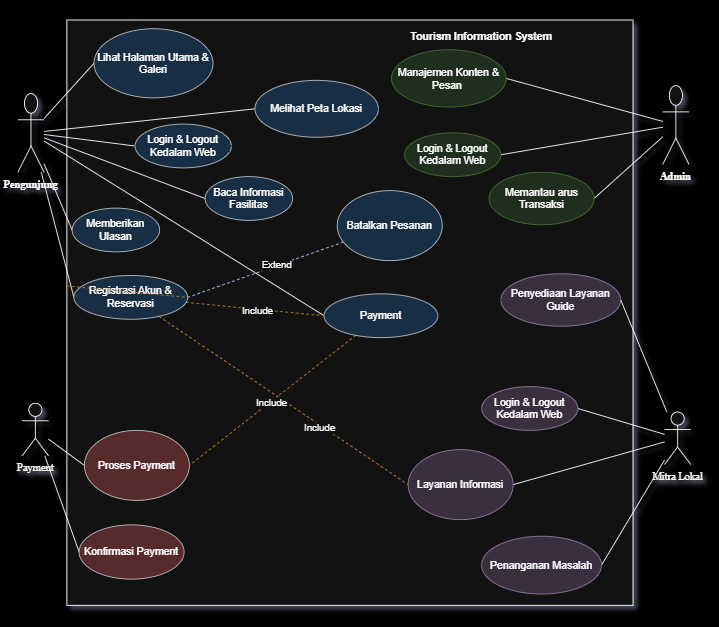

Deskripsi Sistem
Website promosi wisata Goa kaca ini dibuat sebagai media informasi dan promosi untuk memperkenalkan keindahan alam serta potensi wisata yang dimiliki oleh Goa Kaca kepada masyarakat luas baik lokal maupun pengunjung. Goa Kaca adalah destinasi wisata alam unggulan yang menawarkan keunikan fenomena yang sangat langka yaitu dengan kejernihan air yang dimiliki. Terletak di kawasan yang masih asri, goa ini menjadi rumah bagi ekosistem yang terjaga dan menawarkan pengalaman eksplorasi yang menenangkan sekaligus memukau bagi para pecinta alam dan fotografer.
Identifikasi Aktor
Pengunjung
Pengguna akhir yang melihat informasi wisata. Aktor utama dengan interaksi paling banyak pada sistem.
Admin
Pengelola platform yang memverifikasi mitra, manajemen konten, transaksi, dan pesan.
Mitra Lokal
Mitra bisnis yang memberi informasi teknis dan penanganan masalah lapangan.
Payment
Gateway internal yang memproses transaksi pembayaran secara otomatis secara mandiri.
Identifikasi Use Case
Fungsional Pengunjung
- Login/Logout kedalam web
- Lihat Halaman Utama & Galeri
- Baca Informasi Fasilitas
- Melihat Peta Lokasi
- Registrasi Akun & Reservasi
- Berikan Ulasan
Fungsional Admin
- Login/Logout kedalam web
- Manajemen Konten & Pesan
- Memantau Arus Transaksi
Mitra
- Login/Logout kedalam web
- Penyediaan Layanan Guide
- Penanganan Masalah
Fungsional Payment
- Proses Payment
- Konfirmasi Payment
Hubungan (Relationship)
Hubungan (Relationship)
